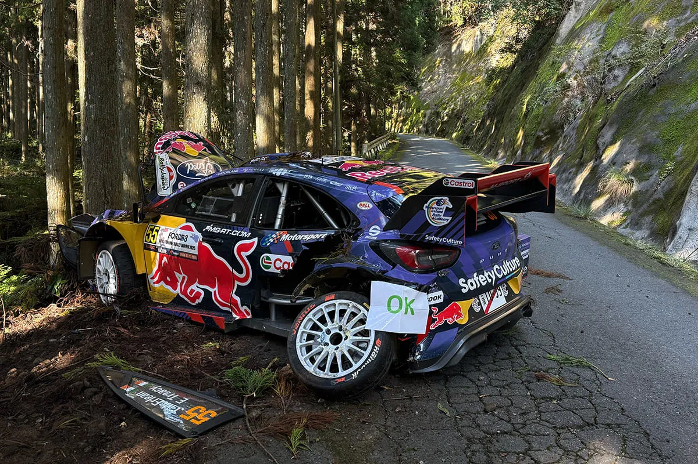
Every 2026 WRC Driver's Biggest Crash
Thumbnail: @ World
Maps: Rally-Maps.com
Every rally driver has had a big crash in their career. In this post, we will be taking a look at the biggest smash of every driver in the top class from the 2026 WRC season. Let's have a look!
Sebastien Ogier - Rallye Monte Carlo 2012
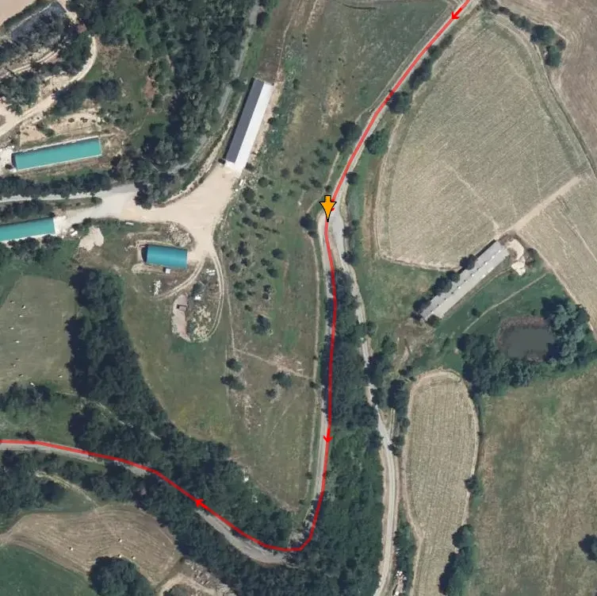
2012 was a sabbatical of sorts for Sebastien Ogier. The - then young - Frenchman had departed Citroen at the end of 2011, to join Volkswagen. The problem was that the German brand would be joining the WRC in 2013, meaning that Ogier would be left without a drive for the following season. Thankfully for the Frenchman, Volkswagen set up a campaign for him in the Skoda Fabia S2000, competing in all but one of the season's events.
His campaign started in Monte-Carlo, where the Frenchman was setting some very impressive times, running as high as 4th place. Things would change on SS10 Lamastre - Gilhoc - Alboussière.
In a high-speed section, Ogier cut a left hander too much, raising his Fabia on two wheels, and crashing on speed onto the trees the opposite side.
Εlfyn Evans - Rallye de Portugal 2023
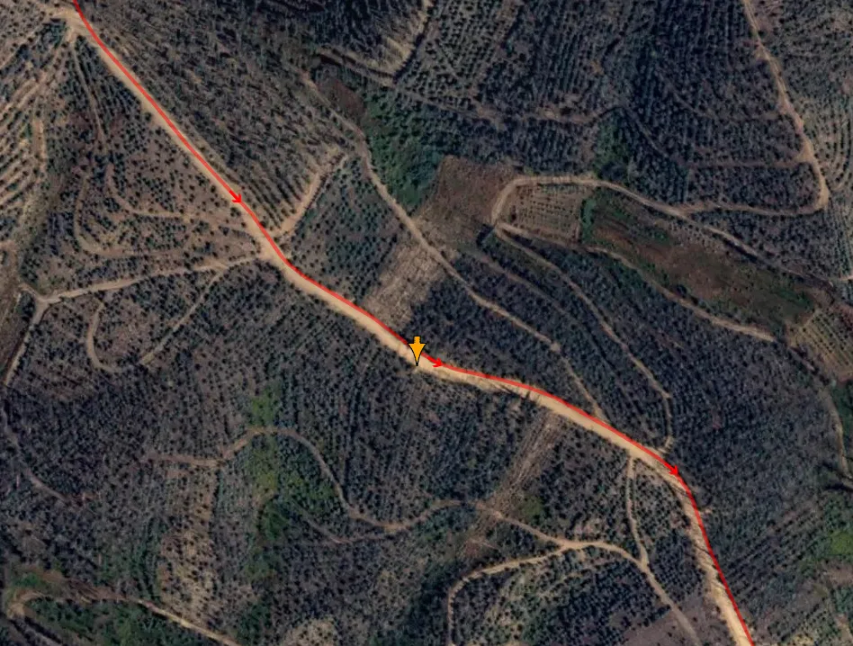
Rally Portugal 2023 was the first time Elfyn Evans was opening the road on Friday since Rally Sardegna in 2020. It wasn't going very well for the Welshman, he was running in 6th heading to SS7 Mortagua, the last of the day's stages. Heading towards the end of the stage, on a high-speed section, Evans was too fast on a left hander, hit a small bank on the right hand side of the road, and rolled several times amongst the trees. Elfyn and co-driver Scott Martin walked away from the 13G impact unharmed.
The Welshman said that he was overdriving his Yaris Rally1, and he perhaps was too confident heading to that corner.
Thierry Neuville - Rally Chile 2019
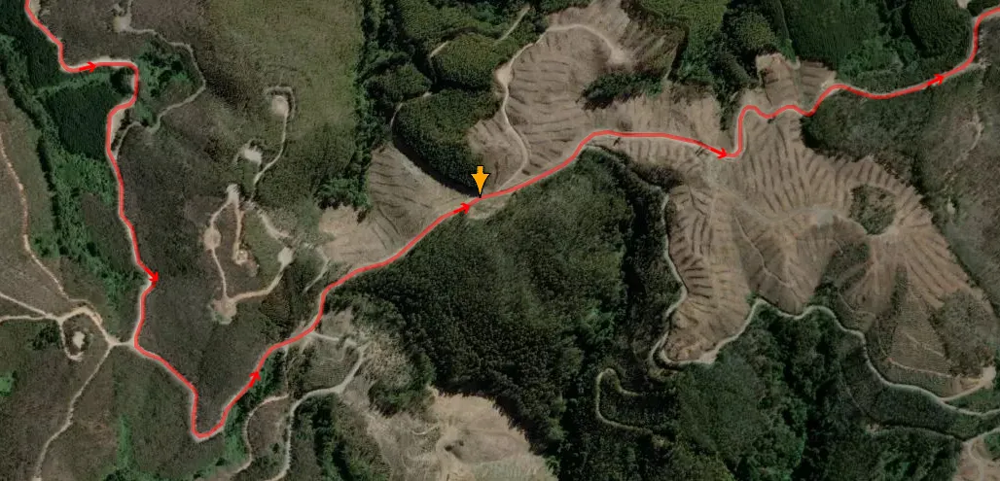
At the inaugural Rally Chile, Thierry Neuville was running in a podium position up until SS8 Maria Las Cruces. At 14.03km on a blind crest, Neuville veered too much on the left, and hit a wooden log, which sent his Hyundai i20 Coupe WRC into a series of rolls. Both he and co-driver Nicolas Gilsoul walked away unharmed from the incident.
Takamoto Katsuta - Rally Sardinia 2020
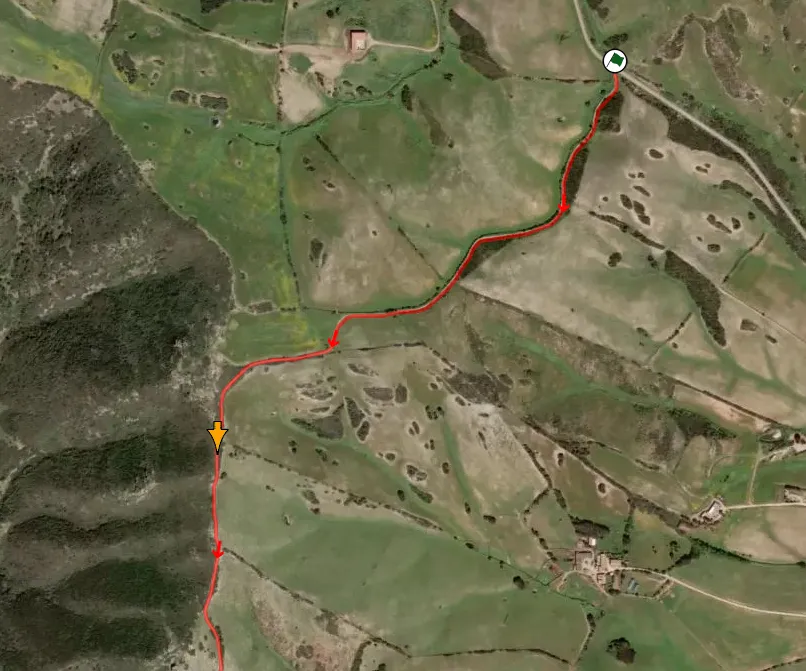
On Sunday's second stage, Takamoto Katsuta, who had already crashed once that weekend, going off the road on SS4 Erula-Tula, crashed heavily just over a kilometer from the start of SS14 Sassari - Argentiera. The Japanese driver went wide and hit a bank with the left side of his car, which in turn sent it on a very high roll. The crew walked away from the incident.
Adrien Fourmaux - Rallye Monte Carlo 2022
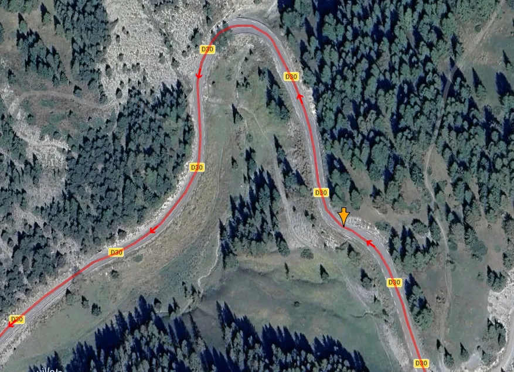
The start of the Hybrid era saw Adrien Fourmaux crash heavily on SS3 Roure-Beuil, Friday's opening test. The Frenchman was too fast on a downhill left hander, and hit a bank, somersaulting him over the armco barrier, and down the mountain side. Both he and co-driver Alex Corria walked away unharmed from the incident, a testament to the Rally1's safety cell. The car was completely destroyed.
Sami Pajari - Rallye Monte Carlo 2025
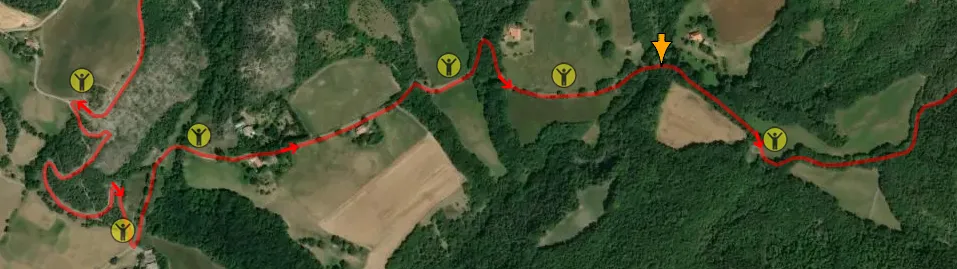
Sami Pajari's first full season aboard Rally1 machinery started on the wrong foot. Toyota's Junior driver was running in 7th place heading into the final day, but his run would be cut short on the first stage of Sunday. On SS16 Avançon-Notre-Dame-du-Laus, Pajari slid into a bridge and rolled his GR Yaris Rally1. The violent collision ended his rally.
Oliver Solberg - Rally Finland 2022
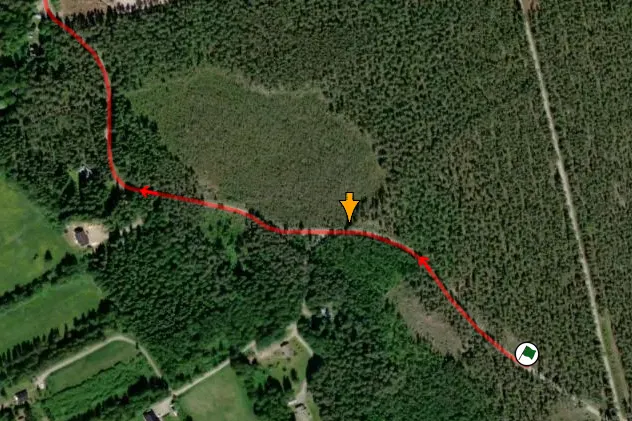
Oliver Solberg's first stint on Rally1 machinery was not great for the two-time WRC winner, struggling to get to grips with the Hyundai i20 N Rally1.
On just the first corner of the first proper stage of Rally Finland in 2022, SS2 Laukaa, Oliver Solberg was just too fast on a left hander, rolling his Hyundai i20 N Rally1, and destroying the chassis. The Swede would compete in just two more events with the South Korean manufacturer, before being released.
Josh McErlean - Rally Japan 2025
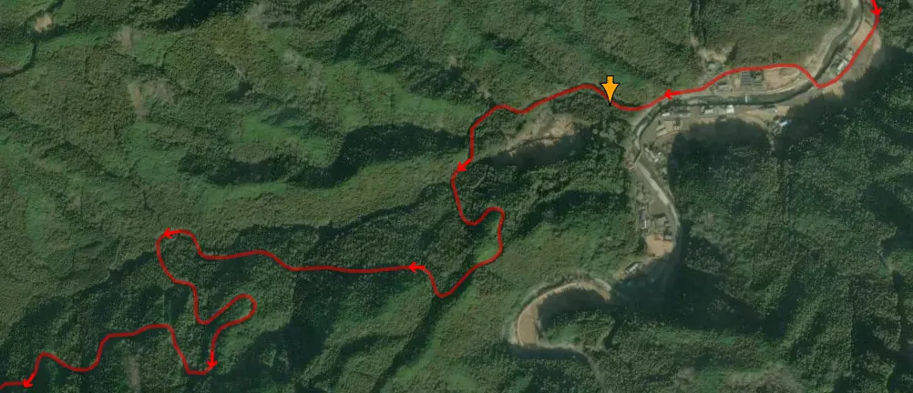
On about 8.9km into the Shinshiro test of Rally Japan 2025, Josh McErlean carried too much speed into a sweeping right-handerand the car slammed into the trees, an impact that registered around 16G. Both he and co-driver Eoin Treacy walked away with bruising but the Ford Puma was badly damaged and the crew could not restart.
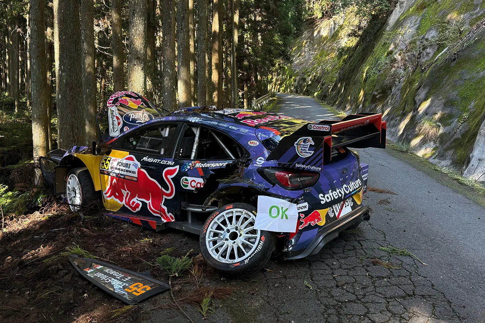
Jon Armstrong - Rally Sweden 2020
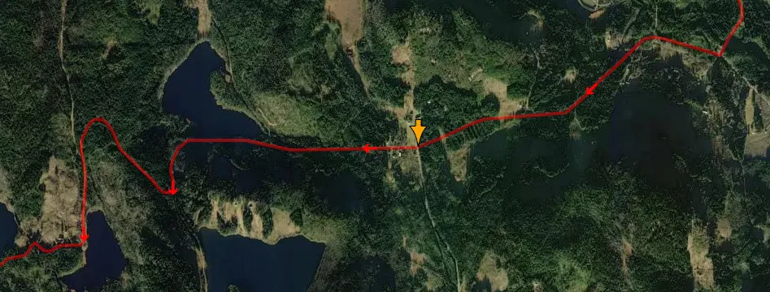
Rally Sweden 2020 was Jon Armstrong's first WRC event since 2017, and also his first since his victory at the eSports WRC championship. The Northern Irishman was driving a Ford Fiesta Rally4 for the Junior WRC championship, with his event ending prematurely on SS4 Nyckelvattnet. Armstrong was too fast on a fast right hander, going rear-first into a ditch, hitting a telegraph pole, and then rolling into a bank, and another telegraph pole. Crew was ok, but Armstrong would not compete in the 2020 JWRC season after that rally.
Esapekka Lappi - Rally Chile 2023
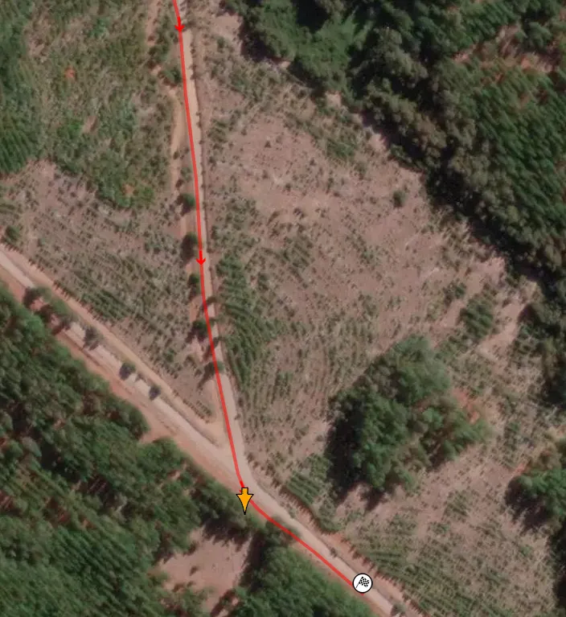
On just the last corner of the first stage of Rally Chile in 2023, Esapekka Lappi was just too fast for a tight right hander, with the Finn pulling the handbrake, then clipping a concrete block on the inside of the corner. That sent his i20 N Rally1 Hybrid into the trees, wrecking his car. The Finn would not restart.
Martins Sesks - Rally Italia Sardinia 2025
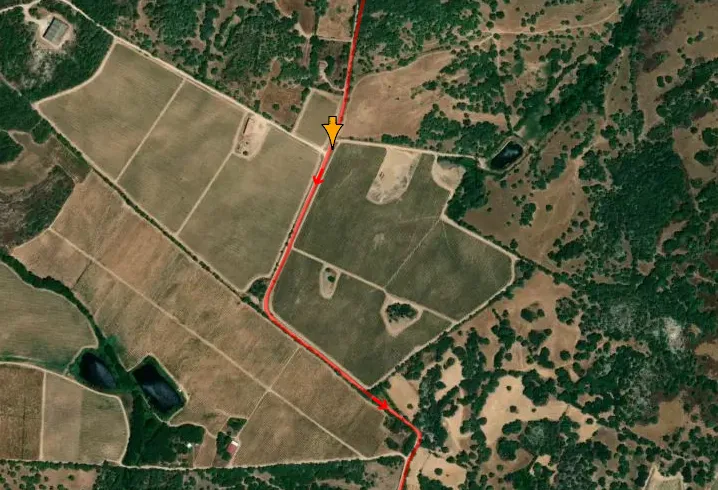
In just the second stage of the event, all three M-Sport Puma Rally1s went out of the event, with the biggest crash being the one of Martins Sesks'. In a high-speed section of SS2 Telti - Calangianus - Berchidda the Latvian was a fraction too much to the left on a jump, which in turn sent him into a fence, resulting in a series of rolls. Both he and co-driver Renars Francis would walk away unharmed from this 5th gear smash.
Dani Sordo - Rally Finland 2006
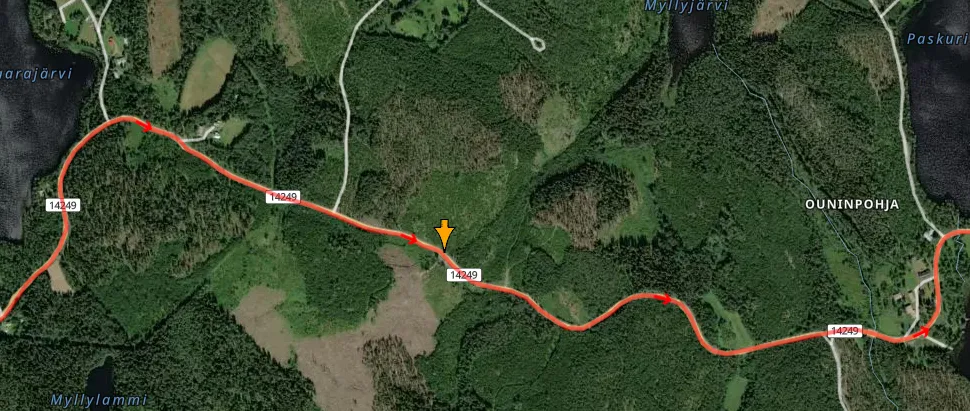
Early on in SS14 Ouninpohja Länsi, in a high-speed spot with a series of crests that caught out Toni Gardemeister in 2001, Dani Sordo was too fast over a crest, landing sideways, and veering into a rock. The impact sent the Spaniard into a spiral, ending up amongst the trees, opposite to the rock. The Kronos Citroen crew were running in 5th before the accident.
Hayden Paddon - Rally Italia Sardinia 2016
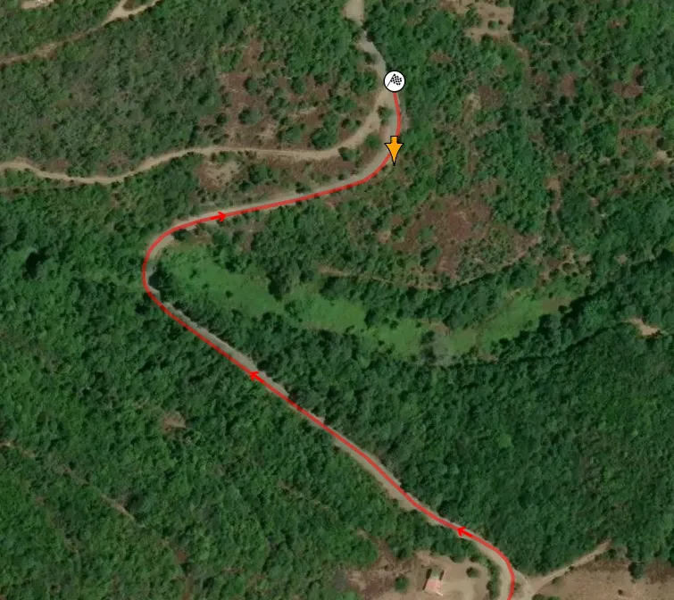
Just two rounds removed from his first - and only - WRC win in Argentina, Paddon suffered a big off in Sardinia. On the final corner of SS7 Tula, Paddon outbraked himself on the tarmac, and went down a cliff, rolling his i20 WRC, and ending his event.
Gregoire Munster - Rally Finland 2024
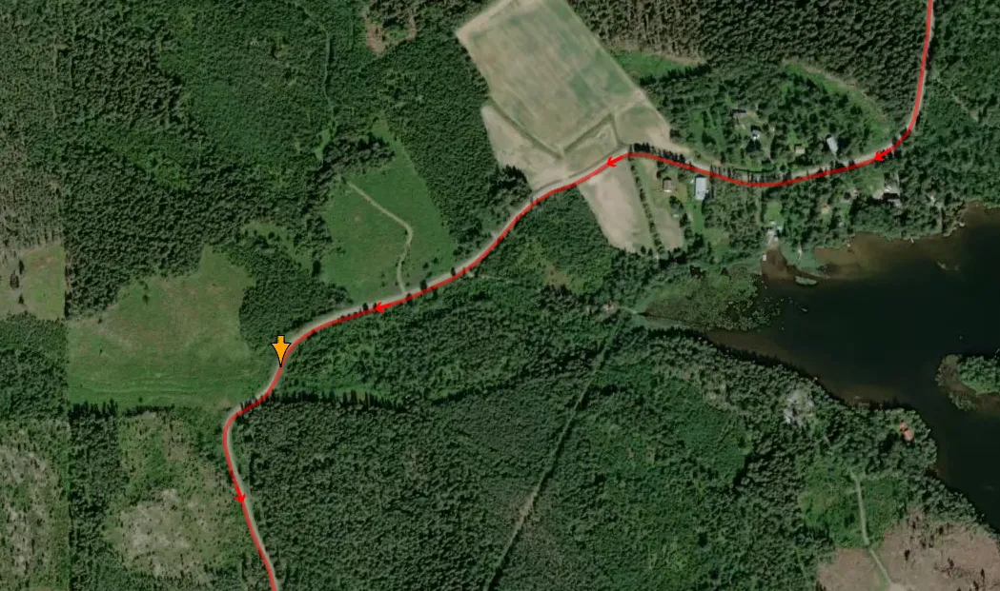
Gregoire Munster's first time in a Rally1 in Finland came to an end on the first stage of Saturday, SS11 Västilä. The Luxembourger was running in 7th before getting caught out on a medium speed left-hander. Munster rolled his Puma Rally1, but incredibly was able to restart on Sunday thanks to his M-Sport mechanics.


Comments